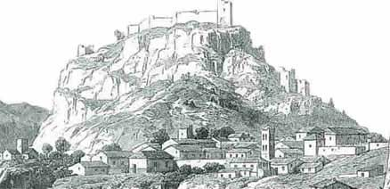

Το κάστρο της Καρίταινας
Εν τούτω άρχισεν εμπρός ο κάποιος μέγας αφέντης, |
 Κλασικό δείγμα φρουριακής αρχιτεκτονικής των Σταυροφόρων, το κάστρο της Καρίταινας χτίστηκε από τον Φράγκο Γοδεφρείδο Ντε Μπριγιέρ στα μέσα του 13ου αιώνα. Το 1272 ή 1275 πέρασε στην κυριαρχία του Γουλιέλμου Βιλεαρδουίνου και των διαδόχων του έως το 1320 που καταλήφθηκε από το Δεσποτάτο του Μυστρά. Μεταξύ των ετών 1320-1458 περιέρχεται στη βυζαντινή κυριαρχία, για να καταληφθεί στη συνέχεια από τους Ενετούς. Ακολουθούν η α΄ περίοδος τουρκοκρατίας (1460-1685), η β΄ περίοδος Ενετοκρατίας (1685-1715), η β΄ περίοδος τουρκοκρατίας (1715-1821) για να καταληφθεί από τους Έλληνες και να επισκευαστεί στα 1826 από το Θεόδωρο Κολοκοτρώνη, ο οποίος το χρησιμοποίησε ως ορμητήριο και καταφύγιό του κατά του Ιμπραήμ. Χτισμένο στην κορυφή του λόφου το κάστρο ελέγχει το στενό πέρασμα που συνδέει τη Μεγαλόπολη με την πεδιάδα της Ηλείας. | ||